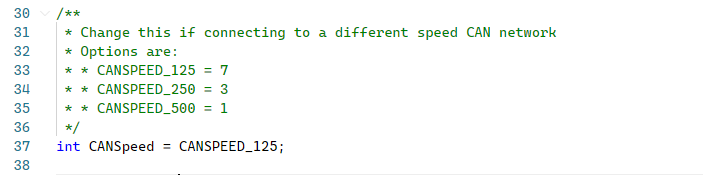

Ports
Select the COM port to connect to. If there is more than one it will most likely be the one with Arduino LLC in the name.
Changing CAN speed
If you wish to change the CAN connection speed modify the arduino code. Change the variable CANSpeed to the desired speed.
It is recommended to disconnect the Arduino from the vehicle before doing this.
I could have made this configurable but i only needed to connect to a single network so...

Uploading Arduino code
Have a look at the GitHub repo for information on what needs to be uploaded to the Arduino and how to hook it up to a vehicle.
| Id | D0 | D1 | D2 | D3 | D4 | D5 | D6 | D7 | Notes |
|---|
OBD
This is the OBD pinout for my 2010 Focus. Iv'e added it simply to make my life easier! Your vehicle may not be the same.